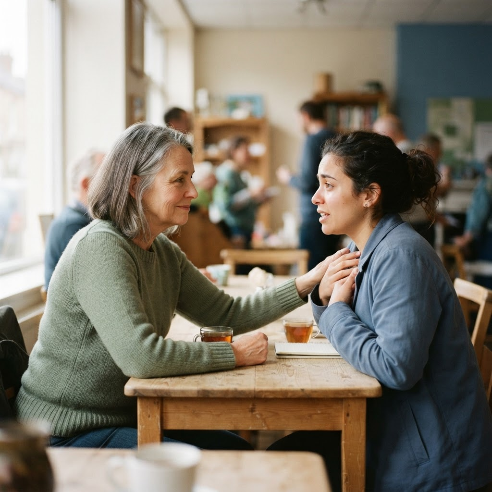
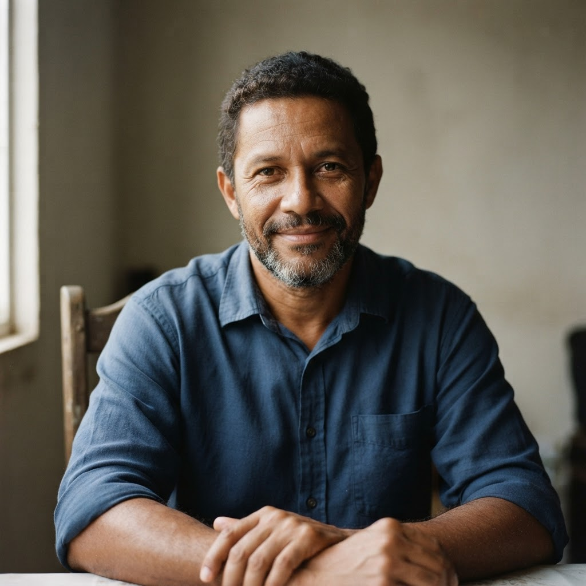

Acolhimento para recomeçar, apoio para vencer.
Acreditamos que cada vida merece uma nova chance. Oferecemos suporte humanizado, recursos práticos e caminhos claros para a recuperação e reinserção profissional.
Conheça o Restaurar e Curar
Um ecossistema criado para acolher histórias, restaurar dignidades e apontar novos caminhos profissionais.
O projeto Restaurar e Curar nasce com o propósito de dar visibilidade a pessoas em processo de reabilitação, sensibilizando a sociedade sobre a importância da empatia e do acolhimento — promovendo uma mudança real de mentalidade em relação a quem está se recuperando. Mais do que beneficiar quem vive essa jornada, o projeto contribui para a construção de uma sociedade mais justa e inclusiva.
Nossa trajetória começou em 2024, no primeiro ano do Ensino Médio na Etec MCM, e segue até 2026, nosso último ano de escola, culminando na apresentação deste Trabalho de Conclusão de Curso.
Criamos este site pensando em boas experiências — esperamos que você se sinta confortável aqui. Seja bem-vindo.

Missão
Promover a conscientização sobre a dependência química, incentivando a empatia, a inclusão social e a reintegração ao mercado de trabalho.
Valores
Empatia, respeito, inclusão, ética, responsabilidade social, solidariedade e compromisso com a dignidade humana e a igualdade de oportunidades.
Objetivo
Reduzir estigmas sociais, apoiando indivíduos e famílias, além de promover conscientização, empatia e inclusão durante a recuperação.
"Acreditamos no potencial inexplorado das pessoas e que o trabalho digno é um pilar fundamental para restabelecer o propósito de vida."Restaurar e Curar — TCC de Impacto Social
Volta ao mercado de trabalho
Conselhos práticos e diretos, estruturados para impulsionar suas chances na busca pela colocação profissional.
Como montar um currículo
Mantenha a simplicidade. Foque nos dados essenciais de contato, seguidos de sua formação básica e experiências em ordem cronológica decrescente.
- Limite o currículo a no máximo 1 página
- Evite preencher com dados pessoais sensíveis
Dicas para entrevistas
A preparação prévia é o segredo. Conheça a empresa contratante antes da conversa e demonstre interesse ativo pelo segmento de atuação.
- Treine respostas claras sobre sua trajetória
- Pontualidade é o primeiro cartão de visitas
Erros comuns
Muitas vezes pequenos descuidos reduzem suas chances de avanço. Entenda o que deve ser evitado durante os processos de seleção.
- Evite falar mal de experiências anteriores
- Não minta sobre qualificações técnicas
Cursos gratuitos recomendados
Capacite-se gratuitamente através de instituições renomadas e certificadas do mercado nacional.
Aprender a Empreender
Desenvolva habilidades essenciais de planejamento, marketing e organização financeira para criar o seu próprio negócio.
Acessar no SebraeFundamentos de TI
Introdução completa à tecnologia da informação, preparando para a operação em escritórios e assistência técnica básica.
Acessar Fundação BradescoMetrologia Básica
Passo inicial para quem deseja ingressar no mercado industrial, voltado para qualidade técnica e leitura de medições.
Acessar no SenaiFinanças Pessoais
Domine os conceitos básicos de planejamento econômico pessoal para estabilizar suas contas e iniciar poupanças.
Acessar FGVHistórias de superação
Pessoas reais que encontraram apoio, superaram as adversidades e hoje trilham novas trajetórias profissionais.

"A dependência me tirou tudo, inclusive a confiança no futuro. No projeto, além de apoio humano e acolhimento em momentos de crise, encontrei os guias para voltar aos estudos. Fazer o meu primeiro currículo aqui mudou o meu rumo."
"Os familiares sofrem juntos e muitas vezes não sabem onde buscar ajuda qualificada. Através do mapa de assistência, encontrei o CREAS da minha região e, por meio dos cursos indicados, iniciei minha capacitação em vendas."
Onde buscar ajuda
Localize redes públicas gratuitas de assistência social, saúde e capacitação técnica próximas à sua região. Filtre para identificar qual infraestrutura pública melhor atende sua necessidade imediata de apoio ou saúde.
Centro de Atenção Psicossocial (CAPS)
Serviço de saúde pública do SUS dedicado ao tratamento e reabilitação psicossocial de pessoas que enfrentam sofrimento decorrente do uso prejudicial de substâncias.
Buscar unidade oficialCRAS / CREAS — Assistência Social
Portas de entrada da rede socioassistencial: orientação a famílias, encaminhamentos e acompanhamento de casos de maior vulnerabilidade social.
Buscar unidade oficialCentros de Acolhimento & Albergues
Acolhida provisória, alimentação e apoio para pessoas em situação de rua ou rompimento de vínculos familiares, com foco em reconstrução de autonomia.
Buscar unidade oficialComo funciona o atendimento?
O acesso à rede pública de apoio é gratuito e mais simples do que parece. Veja os três passos.
Escolha o serviço
Use o filtro e o mapa abaixo para identificar a unidade mais próxima e adequada à sua necessidade.
Vá até a unidade
Compareça no endereço indicado com um documento. Não é preciso agendamento nem encaminhamento prévio.
Receba o acolhimento
Uma equipe multiprofissional acolhe você e a sua família e define, em conjunto, os próximos passos do cuidado.
Mapa da rede de apoio
Apoio integrado com o Sistema Único de Assistência Social (SUAS).
Descubra sua área ideal
Responda a 4 perguntas rápidas e descubra quais profissões e cursos mais combinam com o seu perfil.
O que você prefere no seu ambiente de trabalho ou rotina?
Qual dessas tarefas te dá mais satisfação?
Diante de um desafio novo, você prefere...
O que mais te motiva a voltar ao mercado de trabalho?
Seu perfil combina com Empreendedorismo & Vendas
Você tem facilidade para se comunicar, negociar e planejar. Considere explorar cursos de empreendedorismo e vendas como ponto de partida.
Aprender a Empreender
Desenvolva habilidades essenciais de planejamento, marketing e organização financeira.
Monte seu currículo em minutos
Preencha os campos abaixo de maneira simples e confira a visualização do seu documento ao lado, pronta para impressão.
Nome do Candidato
Objetivo
Objetivo profissional ou de carreira.
Formação acadêmica
Formação acadêmica inserida no formulário ao lado.
Experiência profissional
Experiência profissional demonstrada aqui no espaço reservado.
Cursos & qualificações
Idiomas, informática ou cursos profissionalizantes.
Mural da esperança
Deixe uma mensagem inspiradora para encorajar aqueles que estão trilhando seus próprios recomeços.
A estrada do recomeço é longa, mas a paisagem lá na frente compensa cada passo dado no dia de hoje.
— Cláudio R.Não desista de você. Você é muito mais forte do que qualquer uma das suas piores quedas.
— Ana JuliaA capacitação e o estudo abrem portas que pareciam trancadas para sempre. Confie no seu processo.
— Professor SantosO primeiro passo já foi dado hoje, ao buscar informação. Continue firme nessa busca diária.
— Anônimo